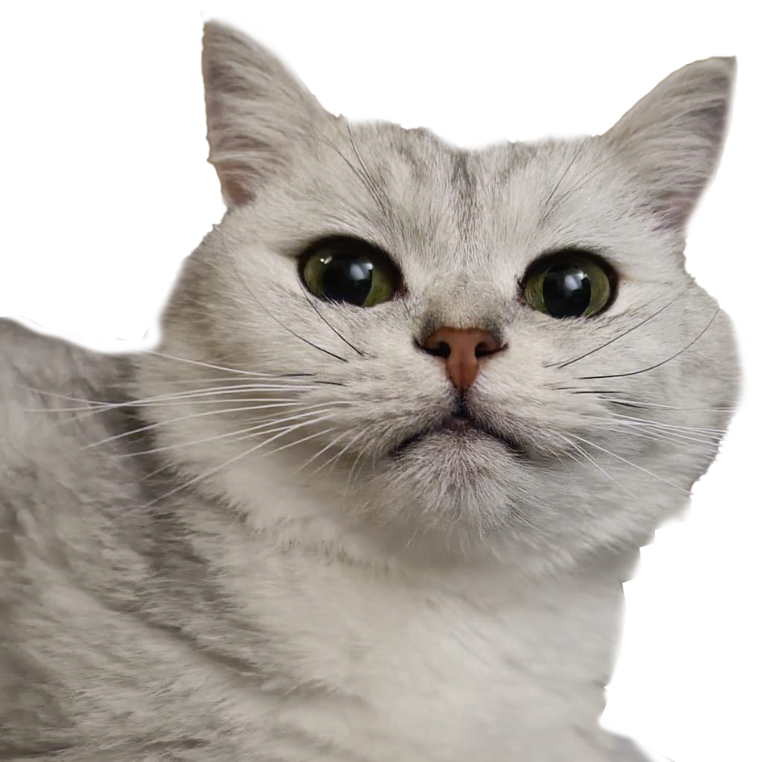

met exclusion kan je iets laten verschijnen wat eerst nog niet op je image staat door een andere image het te laten overlappen.
De mogelijkheden met
en wanneer je ze kan gebruiken...
V scroll omlaag om meer te leren V
alle verschillende manieren om te blenden:
met exclusion kan je iets laten verschijnen wat eerst nog niet op je image staat door een andere image het te laten overlappen.
binnen css hebben we een paar manieren om effecten op afbeeldingen/elementen te plaatsen
hover over deze images om te zien wat ze doen.
blur
opacity
brightness
drop-shadow
grayscale
hue-rotate
invert
saturate
sephia
Vergeet niet dat dit alleen nog de basis is van filters en blend modes, de mogelijkheden zijn oneindig!
voel je alsnog limitaties met deze filters of wil je dieper duiken? doe onderzoek naar SVG Filters!